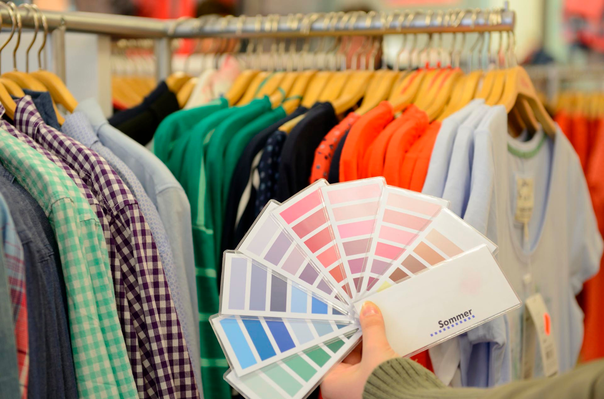
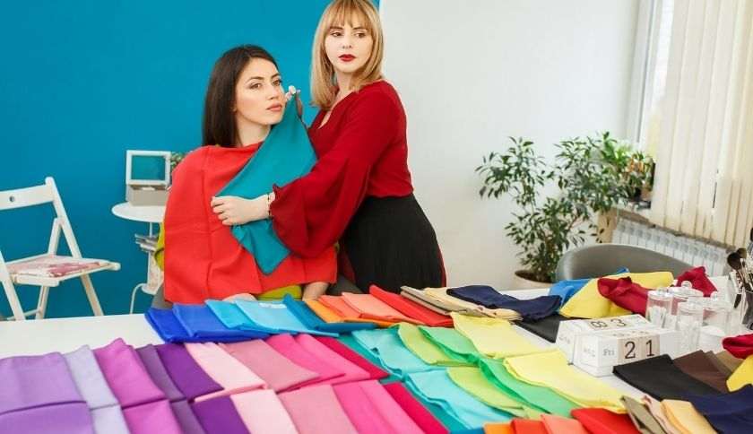
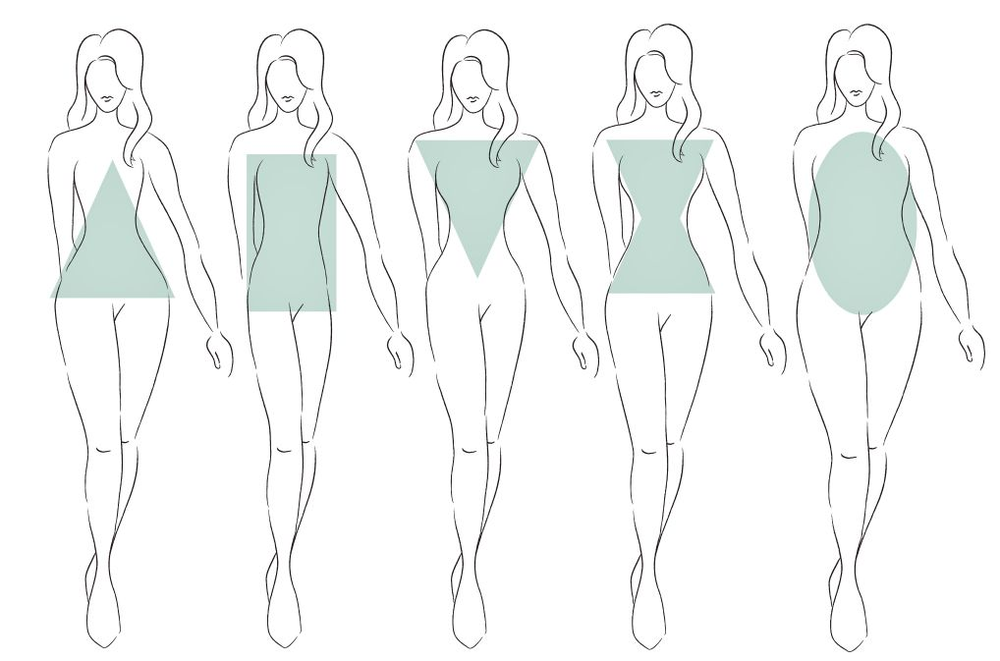
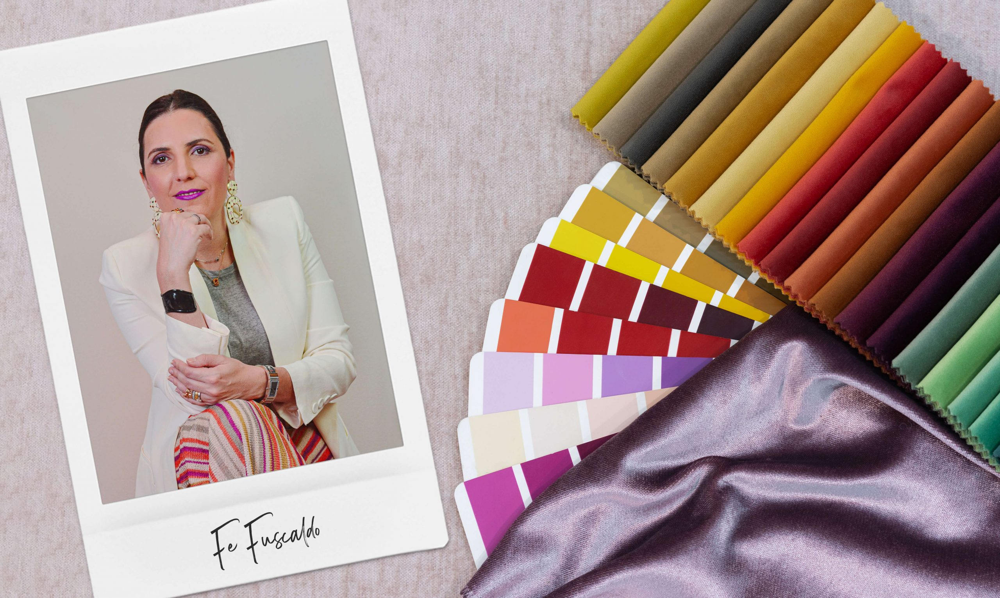

(502) 5513-5773
(502) 5513-5773
THE JOY OF DRESSING IN AN ART
Recently my husband made a sarcastic comment on how much time I spend dressing up before going out. It doesn’t matter whether its to a mall, church, grocery store or even a simple walk in the nearby park. What he failed to notice is that how much i enjoy doing it. Yes, I am a fan of fashion, have always been from the time I could remember. I love to shop trendy, preppy outfits, sandals and accessories. My style is wee bit modern and uncluttered with an extra touch of subtle elegance. I can spend hours walking in and out of every shop in malls with an enthusiasm that never fades. Each person has a different opinion on shopping and dressing up.I firmly believe that the way one dresses up has a lot to with their personality. My husband on the other hand is more than comfortable wearing a faded blue jean and a plain tshirt. He never spends time on shopping clothes nor shoes. Sometimes I would compel him to try new outfits but he has never shown interest.He thinks a man looks great in whatever outfit he is comfortable in.My sister on the other hand would solely rely on me to pick out outfits for her. She would ask my opinion on style and choosing colors. I used to wonder how a person can outsource shopping.One of my friend never likes spending time on shopping .She does not have the patience to select one outfit over the other. She picks the first outfit she lays her eyes on.Another friend of mine is obsessed with shopping.As soon as she gets her month's paycheck she spends half of it buying clothes and accessories. Nowadays, everyone obsesses over buying branded stuff. They convey a sense of status, wealth, and exclusivity. Me on the other hand favor uniqueness and individuality. Shopping is a great way to kill your time. I think it’s my tonic of happiness. Spend time shopping atleast once in a while. If you are not willing to buy anything atleast try window shopping. It takes your mind of any stress incorporated within you. Don’t be afraid to try out new styles and current trends. Loosen the purse strings a little. At times it’s ok to purchase something expensive in case it makes you happy. Love your body image and personality and feel good about yourself. When a pretty dress does not fit,buy it and take it as a motivation to reduce extra weight and wear it. Eliminate any old and out of style outfits from your wardrobe. A black or red dress does wonders sometimes. Trust me it makes you look good. Don’t be reluctant to try out any mix and match combinations.Bring out the fashion sense that is secretly hidden within you. Be confident in the what you wear. If you ever get trolled don’t even bother. Enjoy these little things because as we age so does our shopping mentality. No matter size 0 or size 16 it all depends on how well we carry ourselves with grace and dignity. The joy of wearing a new outfit which we are comfortable in and walking around with a great boost of self confidence is ineffable. The way we dress up affects the way we think, the way we feel, the way we act and the way others react to us. After all life is never perfect but our dressing can be.
Análisis de estilo personal
Comprenda su estilo único, qué funciona para usted y cómo mejorar su imagen con ropa y accesorios que resalten su personalidad.
Mostrar másEste servicio incluye un análisis detallado de tu estilo personal, teniendo en cuenta tus preferencias, cuerpo y estilo de vida. Te ayudaremos a encontrar la ropa y los accesorios ideales para expresarte.
Al finalizar la consulta tendrás un listado personalizado con piezas clave para tu armario, así como consejos sobre cómo combinar prendas y crear looks auténticos y prácticos.
Consultoría de vestuario
Organiza tu guardarropa, eliminando prendas que no aportan valor y eligiendo aquellas que se adapten a tu rutina y estilo de vida.
Mostrar másLa asesoría de vestuario incluye revisar y reorganizar tus piezas, sugerir nuevas combinaciones para optimizar el uso de las prendas que ya tienes y eliminar lo que no aporta a tu estilo.
También te enseñaremos a realizar compras conscientes, buscando piezas versátiles que encajen perfectamente con tu estilo y estilo de vida.
Imagen Corporativa
Transforma tu imagen profesional, alineando tu apariencia con las exigencias de tu sector y los valores de tu empresa.
Mostrar másCon la asesoría de imagen corporativa aprenderás a proyectar una imagen profesional que transmita confianza y autoridad, acorde con los estándares y expectativas de tu sector.
Este servicio también incluye orientación sobre postura, lenguaje corporal y cómo proyectar una imagen coherente durante entrevistas, presentaciones y reuniones.
Consultoría de Eventos
Obtenga consejos sobre cómo vestirse para eventos especiales como bodas, entrevistas de trabajo y eventos corporativos.
Mostrar másAprende a elegir el outfit ideal para eventos formales e informales, teniendo en cuenta el tipo de evento, la ubicación y tus preferencias personales, para estar siempre bien vestido y seguro.
Además, te enseñamos a elegir los complementos y hacer que tu look dure todo el día, con trucos de maquillaje y peinado para completar el look.
Imagen para redes sociales
Aprende a crear una imagen coherente e impactante en tus redes sociales, con tips sobre vestimenta, fotografía y cómo posicionarte en internet.
Mostrar másLa consultoría de imagen para redes sociales tiene como objetivo fortalecer tu presencia online, con consejos sobre cómo crear contenido visual que refleje tu estilo y valores.
Aprenderás a crear una paleta de colores, elegir el mejor estilo fotográfico y alinear tus publicaciones con los objetivos que deseas alcanzar en las redes sociales.
Consultoría de Moda Sostenible
Adopta un estilo de vida más sostenible con nuestra consultoría enfocada en moda consciente y elecciones responsables para tu guardarropa.
Mostrar másCon consultoría de moda sostenible, te ayudaremos a adoptar prácticas que minimicen el impacto ambiental de tu moda, como elegir marcas conscientes y priorizar piezas de alta calidad.
Además, aprenderás a comprar menos y de forma más asertiva, optando por piezas versátiles, que duren más y puedan reutilizarse de diferentes maneras.
Asesoría de Colores
Descubre los colores que mejor complementan tu tono de piel y personalidad para crear un estilo más armonioso y atractivo.
Mostrar másTe ayudaremos a identificar tu paleta de colores personal, basándonos en tu tono de piel, cabello y ojos, para que puedas elegir las prendas que más te favorecen.
Este servicio incluye consejos sobre cómo combinar colores en tu vestimenta y accesorios, además de cómo utilizar el color para transmitir mensajes específicos a través de tu imagen.
Consultoría de Estilo para Hombres
Transforma tu imagen masculina con asesoría personalizada en moda masculina, ajustada a tus necesidades y estilo de vida.
Mostrar másLa consultoría de estilo para hombres se enfoca en encontrar el estilo que mejor se adapte a tu personalidad, cuerpo y profesión, destacando tu mejor versión.
Este servicio incluye recomendaciones sobre cómo elegir ropa adecuada para cada ocasión, cómo combinar prendas y cómo mejorar tu imagen en general.
ASESORIA DE IMAGEN Y ESTILO

La Consultoría de Imagen (o consultoría de estilo, como prefieren algunos) es un conjunto de herramientas que mejoran el estilo sin interferir en la personalidad. Me gusta decir que es la ciencia aplicada al estilo. Con una pizca de óptica, puedes cambiar completamente la imagen de alguien y, lo que es más importante, su propia imagen.

Con análisis de tipo físico, coloración y estilo personal, es posible construir un guardarropa “aliado”. Un armario con prendas seleccionadas y compras precisas. Ropa que realza y habla entre sí. Un armario que hace la vida más práctica, ágil, económica y mejora la autoestima.

No más pasar horas vistiéndote por la mañana… No más tener un armario lleno de prendas con etiquetas… No más descubrir al salir que tu nueva prenda te deja con un aspecto demacrado o fuera de forma… No más “no tengo ropa”. Es posible tener un armario compacto que funcione a tu favor, con prendas que disfracen lo que quieres ocultar y realcen lo que quieres resaltar.

La asesoría de imagen moldea la moda y la belleza para el cuerpo, el tono de piel y el gusto personal de cada uno de nosotros. Nos transforma sin cambiarnos, en la versión de nosotros mismos.